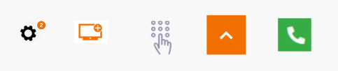
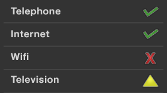

Web develop - Colors and contrasts
Ensure that the colors used are not a problem for the user
Provide enough contrast between front and background colors #
Target: everyone, especially the mobile and tablet users, people with visual impairments, experiencing reading or attention difficulties and elderly people.
When: as of design and during development.
Description:
The contrast between the text and its background, even for non-text graphic objects as long as they provide information, should be high enough.
Insufficient contrast level will have detrimental impact on users with visual difficulties and for mobile and tablets users in a very bright environment.
Don’t:
-
The label “film | 20h40…” does not have enough contrast. It will not be readable by all users.

-
The following images provide information for users. But they don't provide enough contrast (the contrast ratio should be at least 3:1).

Checklist:
- Make sure that the contrast between the color of the background and that of the text and also for text in the form of image carrying information, is:
- 4.5: 1 minimum for a size smaller than 24px CSS and 19px CSS in bold
- 3: 1 minimum is sufficient for a size greater than 24px CSS and 19px CSS in bold
- Special case of non-underlined links:
- These links must have a 3:1 contrast ratio with the surrounding text
- These links must have a way other than the color to distinguish them on keyboard focus or mouse hover
- Make sure that non-text GUI components, graphical objects and interface status (focus, hover) have a contrast of 3:1. This includes: buttons, radio buttons, check boxes, selection lists, navigation menus and panels, toolbars, tabs, carousels, sliders, progress bars, tooltips, graphics…
We do not have to apply this criterion:
- If the graphic component can not be represented otherwise: flag, logotype, real photos, screenshots, medical information diagrams using the colors of biology, gradients representing a measurement (heat maps …)
- If a text, like a label, a data table, brings the same information as the icon or the graphic
- If the contrast ratio of the image doesn't prevent the understanding of the content or the function
- Important: for applications used primarily in mobile web or in mobility, the contrast level of the most important elements must be 7:1 in order to ensure a good readability and usability for all
Users’ goal:
Ease of reading for all users, especially the visually impaired, or people in a very bright environment (outdoors).
Tool:
The Colour Contrast Analyser application can quickly measure colour contrast levels (free for Windows and Mac).
WCAG reference:
Do not use colour or sensory characteristics as the unique source of information #
Target: everyone, especially the colour-blind and more generally people with visual impairments, cognitive limitations, hearing impairments and elderly people.
When: as of design and during development.
Description:
Do not use colour or sensory characteristics (shape, size, sound, direction, visual localization …) as the only way of conveying information, indicating an action, requesting a response or distinguishing an element. The information provided by a colour change or a sensory characteristic must be completed with textual information (alternative) or / and semantic structuring.
Checklist:
- Take a screenshot and convert it in black and white. The loss of colour should not cause difficulty while navigating, nor cause loss of information.
- Turn off the speakers, the level of information should remain the same.
- Be sure that links are not only identified by a different colour, usually underline them. If the are not underlined, on focus and on hover, provide an another way than color to distinguish them.
Example:
For a pie chart, where each part is coloured differently, you could add different pattern fills to identify them without colour.
Do:

Don’t:

This example is not valid because the information is conveyed only by colour.
Users’ goal:
Allow users not distinguishing colours or sensory information (colour blind, visually impaired, hearing impaired, mobile users in bright environment or in noisy environments …) to access the same information by other means.
WCAG reference: